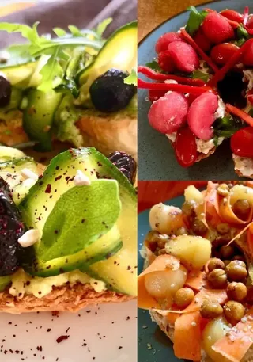

Crostone di pane con hummus e radicchio
Fette di pane alle noci tostate, spalmate di hummus di ceci e completate con radicchio grigliato e balsamico: un aperitivo agrodolce.

Chi l'ha detto che la frisella è solo pomodoro e origano? Quest'estate ho provato a portare in tavola l'arcobaleno con tre versioni fresche, croccanti e gustose.
Ricetta di Egi, pubblicata originariamente sul suo profilo Al.ta Cucina ↗.
PURE RED La Base: frisella di strofinata e bagnata con acqua al pomodoro filtrata. Il Top: spalmabile veg di anacardi, sfere di anguria e listarelle croccanti di peperone rosso. Il Tocco in più: Olio evo e menta fresca.
TOTAL GREEN La Base: frisella bagnata con un infuso freddo di basilico e menta. Il Top: crema di avocado al lime, nastri di zucchine marinate alla menta, ciuffi di rucola e olive taggiasche. Il Tocco in più: scorza di limone grattugiata.
ORANGE CRUNCH La Base: frisella bagnata con acqua alla curcuma. Il Top: base di hummus classico, nastri di carote croccanti, palline dolci di melone e ceci speziati crunchy. Il Tocco in più: paprica affumicata e un filo d'olio.
Ora tocca a te: per quale voti? ❤️ per la Rossa 💚 per la Verde 🧡 per la Arancio
Fette di pane alle noci tostate, spalmate di hummus di ceci e completate con radicchio grigliato e balsamico: un aperitivo agrodolce.
Uno yogurt di soia colato e trasformato in spalmabile gourmet al basilico fresco: perfetto su crostini o come dip per le verdure.
Il rimedio perfetto per un vasetto di olive verdi a metà: un patè cremoso e vegetale pronto in pochi minuti, ottimo sui crostini.